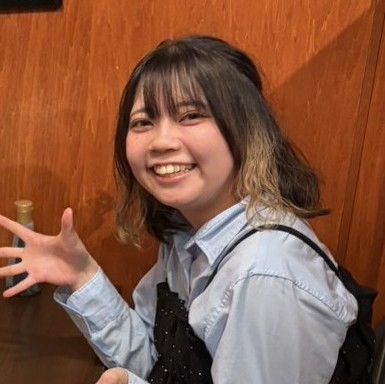

長澤 咲月（ながさわ さつき）
北海道科学大学 情報科学部 情報科学科 2年生
生まれも育ちも北海道
人と話すことが好きで、特に自分とは違う考えの人と話すのが楽しいと感じます。
学んでいること
- ・プログラミング
- ・AI
- ・データ処理
興味のあること/学んでいきたいこと
- ・IT関係
- ・教育
- ・数学
趣味
- ・UFOキャッチャー
- ・散歩
- ・景色を見る

北海道科学大学 情報科学部 情報科学科 2年生
生まれも育ちも北海道
人と話すことが好きで、特に自分とは違う考えの人と話すのが楽しいと感じます。